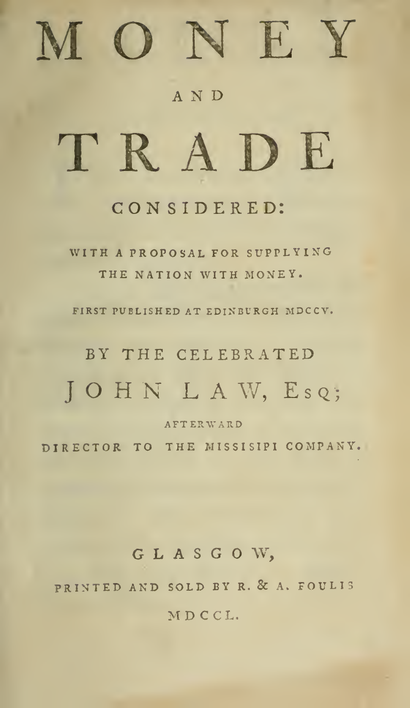
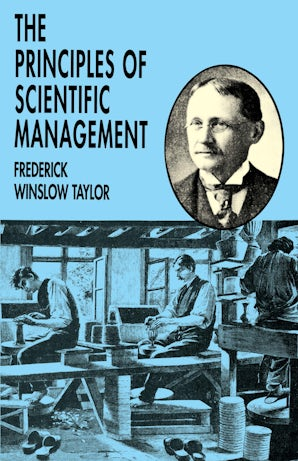
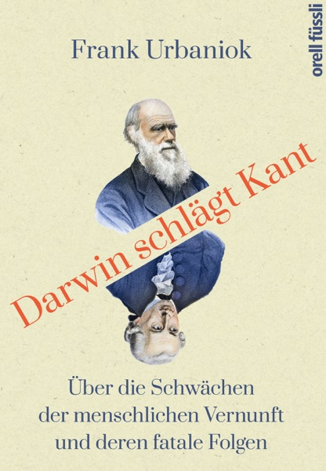

1:03:02 · 8 OPERE
I fautori della modernità (Parte I).
Il filo del discorso
La prima parte dei Fautori della modernità propone una genealogia polemica del rapporto fra moneta, organizzazione del lavoro e formazione delle idee. Caldarella parte da John Law e da Money and Trade Considered, collega carta moneta, unioni monetarie e banche centrali, poi discute Federal Reserve, tassazione sul reddito e Bank of England. I riscontri distinguono la legge approvata dal Congresso dalla firma presidenziale, la natura delle quote della Fed dalla proprietà di una normale società e i biglietti del Tesoro dalla loro interpretazione politica. La parte centrale passa a Taylor, alla catena di montaggio e a Tempi moderni. La lettura dei Quaderni di Gramsci sviluppa il paradosso di un gesto automatizzato che può lasciare il pensiero libero; l’idea di una sua successiva occupazione attraverso l’intrattenimento è l’interpretazione del relatore. Gli studi dei Gilbreth introducono la misurazione dei movimenti e una discussione critica dell’efficienza. L’ultima parte accosta Comte, Popper e il saggio probabilmente identificato con Darwin schlägt Kant di Urbaniok, quindi presenta religioni e correnti artistiche fra Ottocento e Novecento. I giudizi ostili restano attribuiti, senza diagnosi o responsabilità collettive. L’idiota e la figura di Socrate chiudono il contributo con una riflessione su conformismo, originalità e libertà del ragionamento.
I libri nel discorso

Money and Trade Considered. With a Proposal for Supplying the Nation with Money
Frontespizio della ristampa Glasgow 1750: Frontespizio autentico dell’edizione Glasgow, R. & A. Foulis, MDCCL (1750), che dichiara la prima pubblicazione a Edimburgo nel 1705. Pagina PDF 7.
Il frontespizio è dichiarato, non una copertina esterna. Titolo, autore, tipografi e anno sono leggibili. La miniatura della legatura priva di titolo non è stata adottata come immagine pubblica. Questa ristampa storica non è identificata come l’esemplare mostrato nel video.
John Law, titolo Money and Trade Considered e anno 1705 riconoscibili.
Passaggio 5:40 ↗ · Fonti e libro ↗
Costituzione degli Stati Uniti d’America
Copertina della raccolta: Testo firmato il17settembre1787. Per l’immagine si usa la raccolta Penguin Classics The Federalist Papers, ISBN9780140444957, che dichiara di includere il testo della Costituzione; non è una fotografia della pergamena originaria.
Copertina autentica di The Federalist Papers: la descrizione editoriale attesta che la raccolta comprende il testo completo della Costituzione. Non è il frontespizio costituzionale del1787 e Hamilton, Madison e Jay non sono presentati come unici autori del documento.
Costituzione americana e sedicesimo emendamento espliciti nella storia dell’imposta sul reddito.
Passaggio 16:20 ↗ · Fonti e libro ↗
The Principles of Scientific Management
Copertina della ristampa Dover: Copertina autentica della ristampa integrale Dover, ISBN 9780486299884; l’opera originale uscì presso Harper & Brothers nel 1911.
L’immagine corrente dell’editore Dover non è attribuita alla ristampa 1919 evocata oralmente né all’esemplare del filmato. Nome normalizzato Frederick, non Friedrich come nella trascrizione.
Taylor e titolo I principi del management scientifico espliciti; il relatore indica 1919, anno di una ristampa e non della prima pubblicazione.
Passaggio 30:21 ↗ · Fonti e libro ↗
Tempi moderni (Modern Times)
Immagine ufficiale di Tempi moderni: Film del 1936 scritto, diretto, prodotto e interpretato da Charles Chaplin, con Paulette Goddard. Immagine ufficiale di catalogo.
Fotografia in bianco e nero fornita dal sito Chaplin: Charlot e un altro operaio fra gli ingranaggi. Non è una copertina di libro né una locandina con testo. La prima miniatura di 80 × 80 pixel è stata respinta e sostituita con il file principale di 450 × 600.
Charlie Chaplin e Tempi moderni espliciti, con l’operaio inghiottito dalla macchina.
Passaggio 32:12 ↗ · Fonti e libro ↗
Quaderni del carcere
Copertina: Einaudi, ET Biblioteca, 18 luglio 2014, ISBN 9788806223441, edizione critica dell’Istituto Gramsci a cura di Valentino Gerratana, in quattro volumi con apparato. Copertina grigio-azzurra con ritratto di Gramsci; la scheda commerciale indica 3480 pagine, mentre alcune descrizioni catalografiche computano separatamente preliminari e testo. Edizione critica originaria 1975; i quaderni furono scritti nel 1929–1935. La variante commerciale Quaderni dal carcere non è registrata come seconda opera.
Copertina intera dell’edizione in quattro volumi, non una fotografia dei manoscritti o dei quattro dorsi. Il riferimento del video è al testo Q15§5, non all’intera edizione letta integralmente dal redattore.
Antonio Gramsci, Quaderni e Quaderno 22 espliciti; letture su americanismo, fordismo e gesto meccanico.
Passaggio 32:51 ↗ · Fonti e libro ↗
La società aperta e i suoi nemici
Identificazione probabile
Copertina: Armando Editore · Classici · 2018 · volume unico
Copertina autentica di riferimento, controllata visivamente. L’edizione non è identificata come quella usata nel video.
Popper e Platone come nemico della società aperta: identificazione probabile dell’opera, titolo completo non annunciato.
Passaggio 53:34 ↗ · Fonti e libro ↗
Darwin schlägt Kant. Über die Schwächen der menschlichen Vernunft und ihre fatalen Folgen
Identificazione probabile
Copertina della edizione digitale Orell Füssli: Copertina dell’edizione digitale Orell Füssli del 13 marzo 2020, ISBN 9783280090916. Il volume cartaceo 2020 è catalogato dalla Biblioteca nazionale svizzera con ISBN 9783280057223.
La copertina digitale reca il sottotitolo con deren fatale Folgen, mentre il record cartaceo riporta ihre fatalen Folgen: sono formati della stessa opera, non due libri. L’immagine non identifica l’esemplare del video e la data relativa quest’anno appartiene alla registrazione.
Darwin contro Kant, pubblicazione svizzera e profilo forense dell’autore: probabile Darwin schlägt Kant di Frank Urbaniok, nome non pronunciato.
Passaggio 55:11 ↗ · Fonti e libro ↗
L’idiota
Copertina: Feltrinelli, Universale Economica I Classici, catalogo editoriale 28 settembre 2017, 768 pagine, traduzione e cura di Gianlorenzo Pacini; ISBN 9788807901003.
Copertina autentica verificata visivamente, con titolo, autore e marchio Universale Economica Feltrinelli. Il percorso tecnico dell’editore contiene quarta, ma il file effettivo raffigura la copertina anteriore: il contenuto è stato controllato prima dell’uso. Alcuni cataloghi riportano precedenti uscite con lo stesso ISBN; nessuna ristampa è attribuita al filmato.
Dostoevskij e L’idiota espliciti nella lettura sulla mancanza di originalità. Le percentuali appartengono alla formulazione letteraria.
Passaggio 1:01:56 ↗ · Fonti e libro ↗Minutaggi ricavati da testi automatici, da riascoltare. Le identificazioni probabili sono segnalate accanto ai libri.